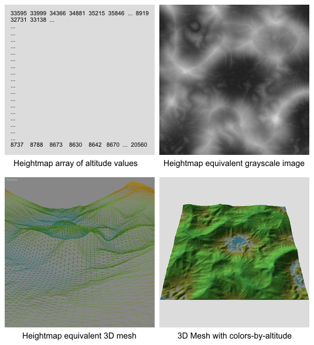

Terrain Heightmaps: Using externally-created heightmaps for terrains
Overview
Unreal Engine 3 supports two terrain design techniques, which include hand-painting directly on the terrain mesh to create the hills and valleys, and importing externally created heightmap files in UnrealEd's G16 bitmap or T3D mesh formats.
The terrain object in UE3 is a standard 3D planar mesh grid with constant X.Y spacing that is specified by the Display.DrawScale and Display.DrawScale3D.X/.Y properties. Since the terrain uses a constant X.Y spacing, mesh triangle-count optimization through combining co-planar faces is not supported, so a 128x128 terrain will always have an underlying 129x129 heightmap array. The constant X.Y spacing also means that geographical systems such as caves and overhangs cannot be created directly by the terrain object and must be added as additional mesh objects placed into the scene. The constant X.Y spacing also determines the maximum slope angle that can be created for a given relative altitude between two vertices: the smaller the grid spacing (DrawScale) value, the steeper the available slope. For cliff-like slopes, staticmeshes should be used instead of attempting to use a very high density terrain.
Each terrain grid vertex's Z coordinate value can be set to within a 16-bit range (0 to 65535) to specify its relative altitude. These values are normally modified by painting the terrain mesh in the Unreal Editor or by importing a heightmap file that contains the altitude values for the terrain mesh vertices.
The terrain system incorporates an optional rendering optimization that uses dynamic LOD tesselation to reduce the number of triangles rendered in the distance. At specified distances from the camera, the terrain quads will be combined to reduce the number of triangles rendered.
Heightmap Overview
A terrain heightmap is an x*y array of altitude values for each point in the terrain mesh. For video game design use, the most common heightmap layout is a square grid, usually of a power-of-two +1 size such as 129x129 or 257x257. Each value in the heightmap array directly corresponds to the Z value (altitude) of a vertex in the final terrain mesh object.
To visualize a heightmap, consider a grayscale bitmap, where pixels of darker grays are lower altitudes and lighter grays are higher altitudes. The most common value range for terrain heightmaps is 16-bits, which supports an altitude range of 0 to 65535. Since standard paint software and standard Video Adapters and CRT/LCD computer displays can only display 8-bits of grayscale and not 16-bits of grayscale, other specialized software has been specifically designed for creating and editing heightmaps.

Heightmap Creation
Heightmaps can be sourced or created using a number of methods, the most common are Digital Elevation Models (DEMs)? which are data files of real planetary terrain collected by airplanes, satellites or spacecraft; and computer generated "algorithmic" heightmaps created by a number of available software applications including HMES, Leveller, Terragen, World Machine and others. For more information on creating heightmaps from DEMS, see this document?.
The most common file format for inter-changing algorithmic heightmaps to UnrealEd is Raw 16-bit, which is supported by most heightmap software applications including those mentioned previously. Raw-16 is a simple headerless binary file format that contains the raw 16-bit altitude data as an x*y stream. The Unreal Editor's native heightmap format is called G16, which will require an intermediary conversion from Raw-16 if the heightmap software does not natively support G16. A few tools exist for conversion to G16 including G16Ed and HMCS.
The algorithmic heightmap software applications commonly use a variety of one or more noise algorithms, such as Perlin, to generate a basic heightmap layout of hills and valleys. This heightmap is then optionally modified with geomorphic algorithms such as weathering erosion, glaciation, etc., and possibly edited or sculpted with various tool functions. The capabilities and methods for creating heightmaps varies with each software application and won't be covered in-depth in this topic.
Heightmap Resolution
Heightmaps should be created at the desired terrain patch resolution +1. In other words, a 128x128 terrain requires a 129x129 heightmap, a 256x256 terrain requires a 257x257 heightmap. The number of patches in a terrain is set in the terrain actor properties under Terrain.NumPatchesX and Terrain.NumPatchesY.
If a heightmap is imported into an existing terrain actor whose Terrain.NumPatches does not match the incoming heightmap resolution, the results are as follows:
- If the heightmap is larger in resolution than the Terrain.NumPatches, for example importing a 257x257 heightmap into an existing 128x128 terrain, the entire terrain will be resized to the imported heightmap resolution.
- If the heightmap is smaller in resolution than the Terrain.NumPatches, for example importing a 128x128 heightmap into an existing 128x128 terrain, two edges of the terrain will remain at the 0 altitude value, causing a ridge along the top and right sides as seen in this image:
 Some heightmap software only supports creation of heightmaps of power-of-two sizes, such as 128 and 256, and do not support the required terrain heightmap power-of-two +1 resolutions such as 129 and 257. These heightmaps will always import with two ridged sides as mentioned previously. There are two methods available to fix this issue, either manually edit the terrain in UnrealEd using the Flatten tool along the two edges (this can take some time to do), or convert the heightmap file to a format compatible with paint software such as TIF-16 and edit the edges by using a copy/paste of the edge pixel line to extend it out from power-of-two to power-of-two +1.
Some heightmap software only supports creation of heightmaps of power-of-two sizes, such as 128 and 256, and do not support the required terrain heightmap power-of-two +1 resolutions such as 129 and 257. These heightmaps will always import with two ridged sides as mentioned previously. There are two methods available to fix this issue, either manually edit the terrain in UnrealEd using the Flatten tool along the two edges (this can take some time to do), or convert the heightmap file to a format compatible with paint software such as TIF-16 and edit the edges by using a copy/paste of the edge pixel line to extend it out from power-of-two to power-of-two +1.
Converting Heightmaps
Heightmap files must be saved as or converted to UnrealEd's G16 or T3D format before they can be imported. If the heightmap software does not natively support G16 but can export to RAW-16 or similar common formats such as Terragen's .ter files, they can be converted using tools such as G16Ed or HMCS.
This example terrain was saved as RAW-16 and centered in altitude on the Z to center the terrain within the 16-bit altitude range. Since this heightmap is 256x256 and not the actual required 257x257 size, it should be exported as TIF-16 and edited in paint software that supports 16-bit grayscale images to extend the bottom and right sides by one pixel so that it is the proper 257x257 size, re-saved as TIF-16, then converted again to G16.
Note that a heightmap imported into UE3 is oriented so that the Terrain actor is on the top-left corner of the heightmap, with the mesh extending positive x across the top of the heightmap, and extending positive y down the heightmap.
Importing Heightmaps
Steps to creating a terrain and importing a heightmap:
Note: To automatically create a new Terrain actor in the map during the import process, skip steps 1 and 2, and in step 4 do not check the "Into Current" checkbox.
1. Insert a Terrain actor into the map.
2. Set the Terrain actor's Terrain.NumPatchesX and Terrain.NumPatchesY to the size of the heightmap G16 file -1. So if the heightmap is 129x129, set the NumPatches values to 128.
3. Insert a DirectionalLight at map origin to simulate sunlight. Change the Movement.Rotation.Pitch to -45 degrees and Movement.Rotation.Yaw to 45 degrees.
4. Go into Terrain Edit mode to display the Terrain Edit dialog.
- If there is more than one Terrain in the map, be sure to select the appropriate terrain in the View Settings group's Terrain drop-down-combobox. The default first terrain actor is "Terrain_0".
- In the Import/Export group, check the "Height Map Only" and "Into Current" checkboxes, select "G16BMPT3D" in the Class drop-down-combobox since this is a G16 .bmp we are importing, then choose the Import button. Locate the external G16 heightmap file in the file dialog and open it. If there are no issues with the heightmap file, such as an incorrect file format, the heightmap will be loaded into the terrain. The viewport should automatically update to show the new terrain heightmap surface shape.
5. If required, in the Terrain Properties adjust the Display.DrawScale3D.X, .Y and .Z values to obtain a correctly scaled terrain.
Be aware that importing and overwriting an existing terrain heightmap will reset all Terrain Editing for "Visibility" and triangle edge turn "Orientation Flip" back to the defaults for each quad and edge. In other words, any quads that were set invisible or any edges that were turned, are cleared back to their normal state when the heightmap file is imported and overwritten in an existing terrain actor.
Fixing the Terrain Edge Orientation
Imported heightmaps often exhibit a visual anomaly that detracts from the smooth quality of the rendered surface where the edge between triangles in a quad is running perpendicular to a sharp ridge or valley. These show up as a shape similar to "teeth" running along the direction of ridges and valleys that are at a 45 degree angle to the terrain mesh.
It is usually easiest to smooth out the "teeth" on these ridges and valleys by turning the triangle edges prior to applying the terrain layer texturing, when the default gray "null" checkerboard texture is rendered. Set the Terrain.MaxTesselationLevel and Terrain.MinTesselationLevel both to 1. Look for the "teeth" ridges and valleys which are easily recognizable by their diamond shaped shadows against the gray default texture, and brush over them with the Terrain Edit dialog's "Orientation Flip" tool until the shadows are more linear.
Important!
You are viewing documentation for the Unreal Development Kit (UDK).
If you are looking for the Unreal Engine 4 documentation, please visit the Unreal Engine 4 Documentation site.